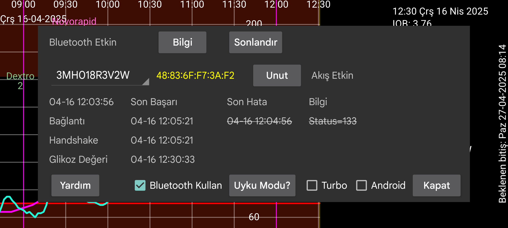

be de fr it nl pl pt ru tr uk zh en
Seçici sensörün adını gösterir. Juggluco aynı anda birden fazla sensör kullanıyorsa, bilgisi gösterilecek sensörü seçebilirsiniz.
Uyku Modu Juggluco'nun çalışmasını engelleyebilecek pil optimizasyonlarının nasıl devre dışı bırakılacağına dair bilgilerin bulunduğu bir ekrana yönlendirir.
Bluetooth Geçmişi: Libre 2'de, 15'er dakikalık aralıklarla geçmişe ait değerlerdir. Daha önce yalnızca tarayarak alınıyordu. Bu seçeneği açtığınızda, Geçmiş değerleri de Bluetooth aracılığıyla alır. Ancak diğer şeyler farklı şekilde çalışacaktır. Libreview'e akış değerlerinin ortalamaları yerine geçmiş değerler gönderilecektir. Dezavantajı ise daha yavaş olmasıdır. Bu, WearOS saatlerinde bir sorun olabilir. Bu seçeneğin Libre 3 ve US Libre 2 sensörleri üzerinde hiçbir etkisi yoktur; geçmiş değerlerini her zaman Bluetooth aracılığıyla alırlar.
⏰: Juggluco'nun Dexcom G7 ve ONE+ sensörlerine bağlanmanın doğru zamanlamasını sağlamak için bir çalar saat işlevi kullanmasına izin verin. Bu olmadan, cihaz kullanılmayıp derin uykudayken bazen sensöre yeniden bağlanmak için uyanmaz ve hemen bir glikoz değeri almaz. WearOS saatimde bu sorun gecenin bir yarısı, muhtemelen çok az hareket ettiğim için oldu. Sonrasındaki yavaş uyanma nedeniyle bunu saatte ve telefonda görmedim, yalnızca günlük dosyalarında gördüm. Telefonumun bu ayara ihtiyacı yok ve bu işlev açıldığında daha kötü performans gösteriyor gibi görünüyor.
İzin: Juggluco'nun önceki sürümleri, sensörün cihaz adresini bulmak için konum izni gerektiriyordu. Bu, kullandığım sensörler için artık gerekli değil. Belki de hala bunun gerekli olduğu sensörler vardır, bu durumda bunu açabilirsiniz. İlk temastan sonra Juggluco cihaz adresini kaydeder ve konum iznine gerek kalmaz. Sensör tanımlayıcısından sonra cihaz adresi biliniyorsa görüntülenir. Kırmızı, ABD benzeri bir sensör anlamına gelir. Android 12'de yeni bir Yakındaki Cihazlar izni vardır ve bu, bir Bluetooth cihaz adresini aramak için konum izni yerine kullanılabilir ancak Bluetooth cihazlarıyla daha sonraki temaslar için de gereklidir.
Unut: Juggluco'nun cihaz adresini unutmasına ve cihaz adresini taramasını sağlar. Bazı sensörlerde bağlantı elde etmek için gereklidir ve daha sonra Juggluco tarafından otomatik olarak yapılır. Bu düğmeyle Juggluco'nun bunu yapması gerektiğini manuel olarak hatırlatırsınız belki başka durumlarda da buna ihtiyaç duyulabilir.
Sonlandır: Sensöre Bluetooth üzerinden bağlanmayı durdurur. Daha sonra sensörden tekrar akış değerleri almak isterseniz, tek yapmanız gereken tekrar taramaktır. Sensör doğrudan saate bağlıysa, önce bunu kapatmanız ve ardından telefonda Sonlandır'a ve ardından saatte Senkronize Et'e basmanız gerekir.
Turbo: Daha az bağlantı hatası umuduyla sensörle temas çabasını artırır, ancak daha fazla pil gücü kullanabilir. Freestyle Libre 2 sensörlü Watch4'te gerekli gibi görünüyor, ancak Freestyle Libre 3 sensörlü ve denediğim akıllı telefonların hiçbirinde gerekli değildi.
Android: Juggluco yerine Android'in sensörle bağlantı kurmasına izin verir. Kullanmayın! Çoğu durumda bir bağlantı kurulması daha uzun sürecektir. Bu seçenek, daha sonra onarılan bozuk bir Android 13 sürümü nedeniyle tanıtıldı. Bunu yalnızca sensör ekranında son zamanlar görüntülenmediğinde açmalısınız. Bu, hiçbir hatanın gösterilmediği, ancak değerlerin de alınmadığı ve Bluetooth'u kapatıp açarak tekrar çalıştırabileceğiniz anlamına gelir. Avrupa Libre 2 sensörünü aynı anda aynı telefonda iki uygulamayla bağlamaya çalıştığınızda (bu ancak o zaman mümkündür) siz de bu çözüme ihtiyaç duyabilirsiniz.
Bilgi: Sensörün başlangıç-bitiş zamanlarını ve son tarama-akış zamanlarını verir.
Freestyle Libre 2 sensörüne Düşük Enerjili Bluetooth üzerinden bağlanmak için, Bluetooth açık olmalıdır. Sensör bu uygulama tarafından başarıyla taranmadan önce hiçbir şey olmayacaktır. Sensör, akıllı telefonlardaki FreeStyle okuyucusuna veya diğer uygulamalara bağlanmamalıdır. Abbotts Librelink uygulamasının alarmları kapatılmalı veya uygulama durdurulmalıdır. Bazı Librelink uygulamaları, alarmlar kapalıyken sensörle temas ediyor gibi görünüyor ve bağlantı sorunlarına neden olabiliyor, bu nedenle emin olmak için 'zorla durdur' seçeneğini kullanın. Sensörü Freestyle Okuyucusu ile başlattıysanız ve kapatamıyorsanız, okuyucuyu bir Faraday kafesine koyarak sensörle temas etmesini önleyebilirsiniz.
Sensör Bluetooth üzerinden/Bluetooth Kullan seçeneği açık olmalıdır.
Yukarıdaki koşullar karşılansa bile uygulamanın sensörden glikoz değerlerini alması uzun zaman alabilir. Genellikle bir dakika sürer, bazı durumlarda çok daha uzun sürebilir. Bağlantı aşaması en fazla zorluğa neden olan aşamadır. En sık karşılaşılan hatalar: onConnectionStateChange(BluetoothGatt bluetoothGatt, int status, int newState) fonksiyonunun durum argümanı olan status=133 ile oluşan hatalardır. Bluetooth cihazı bulunamadı anlamına gelir. Çoğu zaman cihazın bulunması biraz zaman alır. Sensörün başka bir cihaza bağlı olması, geçici olarak iyi çalışmaması, diğer cihazların karışması veya Android'in Bluetooth'unun çalışmaması da olası nedenlerdir. Bazen Bluetooth'u kapatıp açmak, telefonu yeniden başlatmak veya diğer cihazların Bluetooth bağlantısını kapatmak işe yarayabilir. Diğer sorunlar bazen sensörü tarayarak çözülür. Araya giren su (vücut suyu dahil) bir sorun olabilir. WearOS saatini sensörden farklı bir kolda takmak, saat ve sensör arasında vücudun konumu nedeniyle bağlantı sorunlarına yol açabilir.
Sensörün başka bir telefonda Juggluco ile taranması (Bluetooth üzerinden Sensör etkinleştirilmiş haldeyken) bağlantıyı bu telefondan çalacaktır ve arada tarama yaparak tekrar geri almak biraz zaman alabilir.